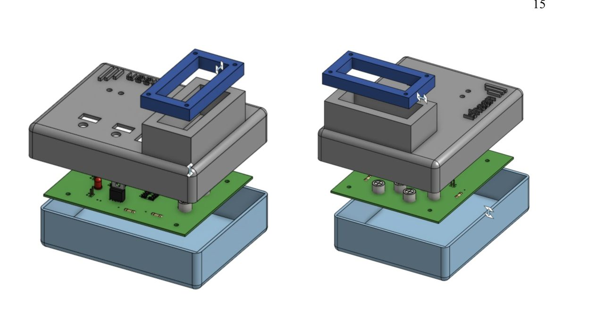
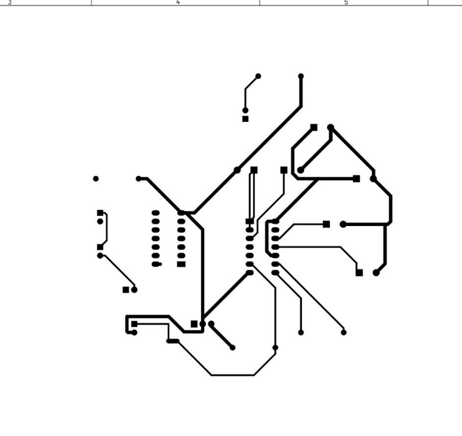
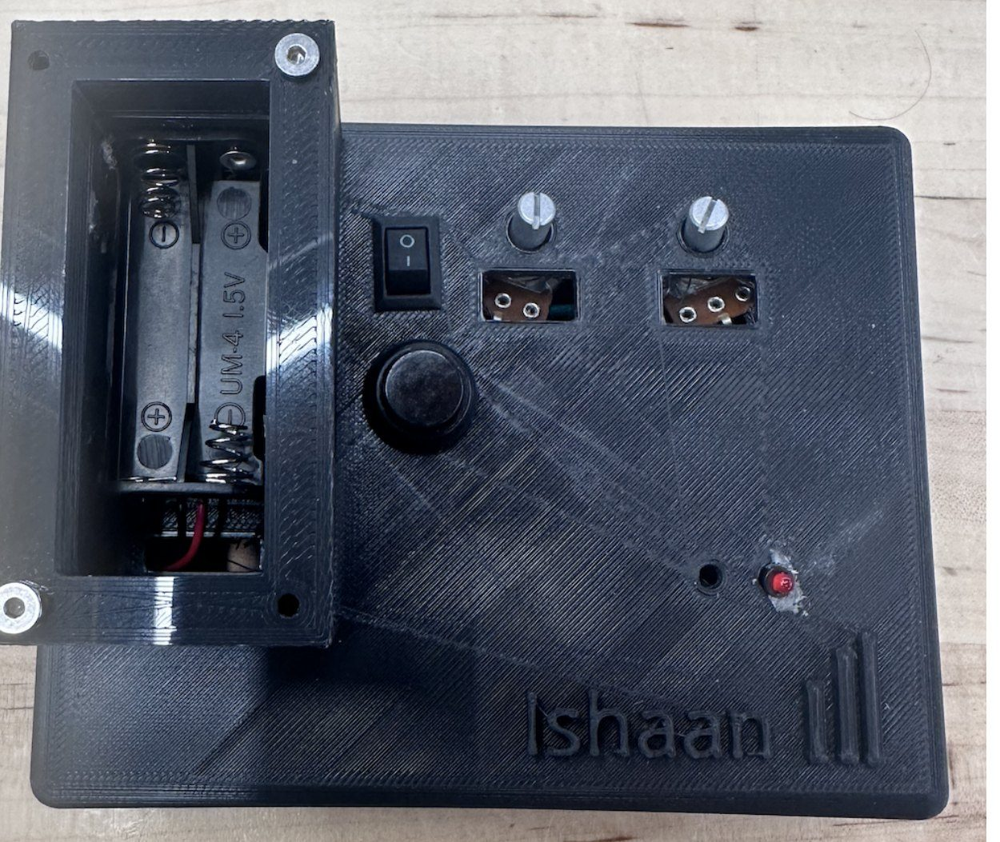
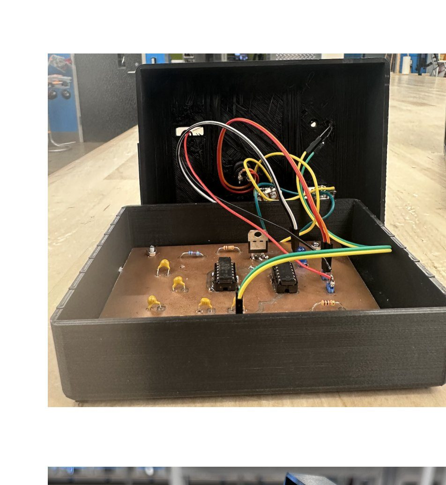

Home Featured work Handheld device
05 · Hardware · Solo build
A handheld device, built alone and tested against 22 specs
I did the requirements, schematic, PCB layout, enclosure, firmware and assembly myself, then tested the finished device against the 22 requirements I had written before building it. Six failed. They are all listed on this page.
- Timeline
- Sep 2023
- Context
- BME290L Medical Technology Prototyping, Duke
- Team
- Solo. Every decision has one owner
- My role
- Sole author. Requirements, ECAD, CAD, firmware, assembly, testing
- Tools
- KiCad, Fusion CAD, 3D printing, Arduino / embedded C, multimeter and oscilloscope testing
- Headline outcome
- 16 of 22 specifications passed. 6 failed: two enclosure, four electronics. Every failure is published with a root-cause diagnosis.
The brief
Take a battery-powered handheld electronics device from nothing to a working physical object. Write the requirements, design the circuit, lay out the board, design and print an enclosure around it, write the firmware, assemble it, then prove whether it does what you said it would. The device runs two timing modes driven by potentiometers: an astable mode that blinks an LED at an adjustable rate, and a monostable one-shot triggered by a button press.
The engineering content is ordinary. What makes it the project I am proudest of is that there was nobody to split it with, so every decision and every failure has exactly one owner, and I could not quietly redefine success at the end.
Why it is hard
Not technically hard. Honestly hard. The difficulty in a solo build-and-test project is entirely about whether you write requirements you can fail.
"Durable" is not a requirement. "Survives a drop from 6 feet without fatal stress concentrations" is. "Easy to use" is not a requirement. "The potentiometer knobs can be operated with the second hand while the device is held in the first" is. The second kind can come back negative, which is the point, and writing them before you know whether your design will pass is a small act of self-sabotage that makes the whole exercise mean something.
What I did
I wrote 16 enclosure requirements and 6 electronics requirements before designing anything, each phrased as something testable. They cover the obvious ergonomics (held in one hand, buttons reachable while holding it, stable on a flat surface, simple battery replacement) and then the ones that come from having used badly made hardware: prevent accidental power-off during use, keep test pads accessible without removing the board, route and secure wires internally, no fatal stress concentrations when dropped from 6 feet.
Then: functional decomposition, schematic capture and PCB layout in KiCad, a 22-line bill of materials with footprints and quantities, and mechanical design in CAD with an exploded assembly, orthographic drawings for base, cover and flap, and tolerances for the board mounts and potentiometer knobs.


Then firmware. An interrupt service routine on the button pin rather than polling, two analog reads for the potentiometers mapped to blink frequency and one-shot duration, and serial output for debugging. I left the sleep-mode calls in the source but commented out, with a note explaining the dependency, rather than deleting them and pretending I had not considered power management.
I also noted in the code that my one-shot implementation was poor: it jitters by twice the blink delay because I built it from delays instead of a hardware timer. That comment is still in the firmware. It is the correct diagnosis, I did not have time to fix it, and writing it down is more useful than hiding it.


Results
Every requirement got an explicit testing strategy written before the test, then a PASSED or FAILED. Fourteen of the sixteen enclosure requirements passed, including the ergonomics, the battery access, the accessible test pads, the secure board mounting and the no-accidental-power-off design. Two of six electronics requirements passed: power activation and the presence and function of both potentiometers as hardware.
I also measured power consumption and battery life, logged the raw potentiometer voltage data, and wrote up a comparison of building this with discrete electronics against a microcontroller, which is the design question sitting underneath the whole project.
What did not work
The six failures, with causes
- Internal wire retention — FAILED. The wires connecting the push button and power switch to the board kept coming undone. Cause: the connection pins on the PCB were too short to hold them. Fix: longer pins.
- 6-foot drop — FAILED. The board stayed safe and every component stayed in position, which is what the mounting design was for. But the cover separated from the base. The enclosure protected the electronics and failed to protect itself.
- Blink trigger — FAILED. Pressing the button did not reliably start the monostable output.
- Blink pattern — FAILED. The LED did not blink in the specified pattern on press.
- Frequency control, 5 to 10 Hz — FAILED. The astable potentiometer did not move the blink rate across the specified range.
- Duration control, 3 to 10 seconds — FAILED. Same on the monostable side.
Four of six electronics requirements failed, so I went looking for why rather than stopping at the result. My written diagnosis names three candidates: a wiring error somewhere in the circuit connections despite the board itself functioning, the fact that my board carried only one LED instead of the two the design assumed, and probable component damage in the potentiometers, which had been reused from the previous semester and had been through a lot.
The enclosure protected the board through a 6-foot drop and then fell apart itself. That is a real result about where I spent my attention.
What I learned
Writing the specification before building is the entire discipline. Once "adjustable between 5 and 10 Hz" is written down, there is no version of the project where I get to call a vaguely blinking LED a success. The specification is a commitment made by a past version of you who had no stake in the outcome, and it is the only honest grader available.
The second thing is that failure diagnosis is worth more than failure avoidance. Four electronics specs failed and the report is more useful than it would have been if they had passed, because the root causes are specific: pin length, LED count, degraded components. Somebody could pick this up and fix it. "It worked" teaches nobody anything.
I think about this most when scoping software deployments now. The question "what would make us say this failed" has to be answered before launch, by someone who does not yet know whether it will.
What I would do next
- Fix the one-shot with a hardware timer. I diagnosed the jitter correctly in the code comments and never implemented the fix. That is the first thing.
- Longer connection pins and strain relief. The wire retention failure is the cheapest of the six to fix and the most likely to recur in any revision.
- Mechanical latch on the cover. Friction fit survived handling and not a drop. A latch or a screw boss turns a FAILED into a PASSED for a few grams.
- Swap in known-good potentiometers and retest before touching the circuit. If degraded components explain the frequency and duration failures, that is a ten-minute test that saves a redesign. I should have run it before writing three hypotheses.